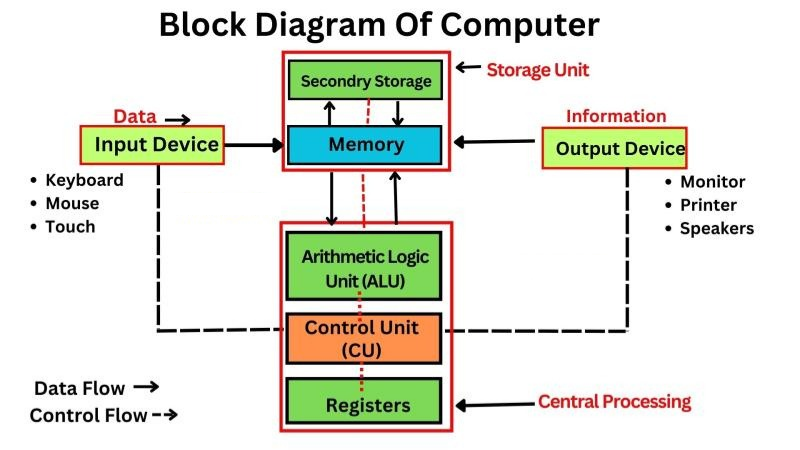

Computer Full Form
Commonly
Operated
Machine
Particularly
Used for
Technical and
Educational
Research
Definition
A computer is an electronic device that can store, retrieve, and process data according to a set of instructions called programs. It can accept input (data), process it, store it, and produce output (results). Computers can perform complex calculations, logical operations, and data manipulation with speed, accuracy, and reliability.
- Origin: The word "computer" comes from the Latin "computare", meaning "to calculate".
- Basic Function: Accepts input, processes data, stores information, and produces output.
- Examples: Desktop, laptop, smartphone, ATM, server, embedded systems, etc.
Input
Enter data and instructions using devices such as a keyboard and mouse.
Processing
The CPU works on data according to program instructions.
Output
Processed results are presented to the user or stored for later use.
Block Diagram of a Computer
- Input Unit: Devices like keyboard, mouse, scanner, microphone, etc. used to enter data and instructions into the computer.
- Central Processing Unit (CPU): The "brain" of the computer that processes instructions. It consists of:
- ALU (Arithmetic Logic Unit): Performs arithmetic and logical operations.
- CU (Control Unit): Controls and coordinates all operations of the computer.
- Registers: Small, fast memory locations inside the CPU for temporary data storage.
- Memory/Storage Unit: Stores data temporarily (RAM) or permanently (HDD, SSD, ROM).
- Output Unit: Devices like monitor, printer, speaker, projector, etc. that display or present results to the user.
Computer system · Block diagram
Block diagram: Input → Processing → Output, with Storage.

Important Computer Terms
- Data: Raw facts and figures that are yet to be processed (e.g., numbers, text, images).
- Information: Processed and organized data that is meaningful and useful for decision-making.
- Instruction: A command or order that tells the computer what operation to perform.
- Processing: The sequence of actions the computer takes to convert data into information.
Hardware and Software
- Hardware: The physical components of a computer system (e.g., CPU, monitor, keyboard, mouse, hard disk, etc.).
- Software: A collection of programs and instructions that tell the hardware what to do. Software can be system software (like Windows, Linux) or application software (like MS Word, Photoshop).
Main Components of a Computer
- 🖥️ Central Processing Unit (CPU): The "brain" of the computer, responsible for executing instructions and processing data. It consists of the Arithmetic Logic Unit (ALU), Control Unit (CU), and registers.
- 💾 Memory Unit: Stores data, instructions, and results. It includes RAM (temporary memory) and ROM (permanent memory).
- ⌨️ Input Devices: Allow users to enter data and instructions into the computer (e.g., keyboard, mouse, scanner).
- 🖨️ Output Devices: Display or produce the processed results (e.g., monitor, printer, speakers).
Applications of Computers
- Education: E-learning, online classes, research, digital libraries.
- Business: Payroll, accounting, sales, inventory, communication.
- Banking: Online banking, ATMs, transactions.
- Health: Patient records, diagnostics, telemedicine.
- Home: Entertainment, shopping, communication.
- Government: Administration, record keeping, e-governance.
- Industry: Automation, design, manufacturing.
- Transport: Ticket booking, traffic control.
- Science & Research: Data analysis, simulations.
Working of a Computer
- User provides input using input devices (keyboard, mouse, etc.).
- Input is converted into binary form and sent to memory.
- CPU fetches instructions and data from memory.
- CPU processes data as per instructions (using ALU and CU).
- Processed data is sent to output devices or stored for future use.
- User receives output (on screen, printer, etc.).
Advantages of Computers
- Fast and accurate calculations
- Can store and retrieve large amounts of data
- Can perform repetitive tasks without error
- Can connect and communicate globally
- Reduces paperwork and saves time
Disadvantages of Computers
- Can lead to unemployment (automation)
- Data security and privacy issues
- Addiction and health problems (if overused)
- Risk of viruses and hacking
- High initial cost for advanced systems
Frequently Asked Questions (FAQs)
- Q: Who is known as the father of the computer?
A: Charles Babbage is known as the father of the computer. - Q: What is the full form of CPU?
A: Central Processing Unit. - Q: What is the difference between data and information?
A: Data is raw facts and figures; information is processed data that is meaningful. - Q: Name two input and two output devices.
A: Input: Keyboard, Mouse. Output: Monitor, Printer. - Q: What is software?
A: Software is a set of instructions/programs that tell the computer what to do.
Conclusion
Computers are essential tools in the modern world, enabling us to perform tasks quickly, accurately, and efficiently. Understanding their working, features, and limitations helps us use them wisely and effectively.